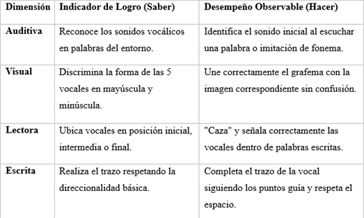

Enfoque pedagógico: Aprendizaje significativo, estimulación multisensorial y conciencia fonológica activa, mediadas por las TIC.
1. Fundamentación Disciplinar y Pedagógica
Para el grado Transición, el proceso de lectoescritura no se aborda mediante la memorización mecánica, sino desde el descubrimiento del principio alfabético a través del juego y los sentidos:
- Conciencia Fonológica (Discriminación auditiva): Capacidad de reconocer que las palabras habladas están compuestas por unidades de sonido (fonemas).
- Correspondencia Grafema-Fonema (Asociación visual y auditiva): Relación directa entre el sonido que escuchamos y la forma gráfica que lo representa.
- Discriminación Morfológica y Visoperceptiva: Reconocimiento de los rasgos distintivos de cada letra (líneas rectas, curvas, inclinadas, círculos) para evitar confusiones de forma.
- Grafomotricidad Sensorial: Desarrollo del control visomotor fino a través del trazo guiado, la espacialidad (arriba-abajo, dentro-fuera) y la propiocepción.
2. Desarrollo Didáctico de los Contenidos Temáticos
RUTA DE APRENDIZAJE:
1. Oído: escucho el sonido
2. Vista: asocio e identifico
3. Mano: trazo y modelo
4. Integración: construyo y supero el reto
-
Módulo 1
Conciencia Fonológica y Escucha Activa
Actividad 1: ¿Qué vocal escucho?
- Propósito académico: Fortalecer la discriminación auditiva y el aislamiento del fonema inicial en posición tónica o átona.
- Explicación para el aula: Los niños se convierten en "Cazadores de Sonidos". La docente o un recurso sonoro emitirá el fonema de forma alargada (aaaaavión, eeeeelefante, iiiiiguana).
- Contenido disciplinar:
- Identificación del sonido: Discriminación de la apertura bucal (a = boca grande, i = sonrisa estrecha, o = boca en círculo).
- Respuesta kinestésica: El niño escucha el sonido y selecciona la tarjeta con la imagen de la boca que hace ese gesto o la vocal gráfica correcta.
Juego interactivo:
Módulo 2
Asociación Visoperceptiva y Léxica
Actividad 2: Une la vocal con su imagen
- Propósito académico: Establecer la relación directa entre el grafema visual y el campo semántico de palabras conocidas (vocabulario primario).
- Explicación para el aula: Se presentan dos columnas interactivas o en papel: en la izquierda las vocales (A, E, I, O, U) y en la derecha imágenes icónicas.
- Contenido disciplinar:
- Asociación gráfica:
- A ⇒ Avión ✈️ / Abeja 🐝
- E ⇒ Estrella ⭐️️ / Elefante 🐘
- I ⇒ Isla 🏝️ / Iguana 🦎
- O ⇒ Oso 🐻 / Ojo 👁️
- U ⇒ Uva 🍇 / Unicornio 🦄
Juego interactivo
Módulo 3
Discriminación Dentro del Contexto (Análisis Palabra-Grafema)
Actividad 3: Caza la vocal
- Propósito académico: Desarrollar el rastreo visual, la atención sostenida y la figura-fondo para ubicar vocales dentro de una palabra completa.
- Explicación para el aula: Los niños reciben "lupas de detective". Observan palabras cortas escritas en letras grandes e identifican qué vocales se escondieron adentro.
- Contenido disciplinar:
- Reconocimiento intrópico: Identificar vocales en posición inicial, intermedia y final (ejemplo: en la palabra M A R I P O S A, "cazar" las A, la I y la O).
- Clasificación por color: Encerrar o marcar cada vocal detectada con un código de color específico (A = amarillo, E = azul, I = rojo, O = verde, U = naranja).
Juego interactivo
Módulo 4
Grafomotricidad y Dominio Visomotor
Actividad 4: Trazo mágico
- Propósito académico: Internalizar la direccionalidad, la presión del agarre en pinza y la forma geométrica de cada grafema (mayúscula y minúscula).
- Explicación para el aula: El trazo se realiza en tres momentos pedagógicos: 1. En el aire/cuerpo (movimiento grueso), 2. Textura táctil (bandeja de arena/harina) y 3. Soporte gráfico (repaso con crayolas gruesas sobre guías punteadas).
- Contenido disciplinar:
- Análisis de rasgo morfológico:
- A / a: Dos líneas inclinadas + una horizontal / Círculo + línea vertical corta.
- E / e: Línea vertical + tres horizontales / Curva abierta con línea horizontal interna.
- I / i: Línea vertical simple / Línea vertical corta + punto tónico.
- O / o: Trazo circular cerrado de izquierda a derecha.
- U / u: Curva cóncava de bajada y subida + línea vertical de apoyo.
- Análisis de rasgo morfológico:
Juego interactivo
Módulo 5
Síntesis Inicial y Producción Léxica
Actividad 5: Construyo palabras
- Propósito académico: Iniciar la segmentación silábica y la selección consciente de la vocal que inicia la estructura de una palabra.
- Explicación para el aula: Se muestra una imagen con la palabra incompleta a la que le falta su primera letra (ejemplo: _ R B O L). El niño debe elegir la vocal correcta del banco de letras para completarla.
- Contenido disciplinar:
- Aislamiento de la vocal inicial: Elección múltiple entre opciones distractoras (ejemplo: para la imagen de Oso, elegir entre A - O - U).
- Lectura icónica: Confirmación de la palabra completa mediante la asociación imagen-texto.
Juego interactivo
Módulo Final
Reto Integrador
El Gran Mapa del Tesoro de las Vocales
- Propósito académico: Evaluativo-formativo. Evalúa la autonomía del estudiante para integrar auditiva, visual y grafomotriz mente todo el sistema vocálico.
RETO FINAL: EL TESORO 3D
1. Estación Escucha: Descifra la clave sonora.
2. Estación Caza: Encuentra las 5 vocales perdidas.
3. Estación Escribe: Escribe tu vocal favorita en la meta.
-
- Fase de Desafío: El niño atraviesa un circuito donde debe:
- Escuchar un sonido e imitar su forma bucal.
- "Cazar" la vocal correcta dentro de una palabra misteriosa.
- Completar la vocal inicial faltante en una tarjeta ilustrada.
- Fase de Escritura Autónoma: En el cofre del tesoro final, el niño escribe o dibuja con la técnica que elija (crayola, tiza, pintura con dedo) la vocal correspondiente a su nombre o a una imagen seleccionada.
- Fase de Desafío: El niño atraviesa un circuito donde debe:
Juego interactivo
Evaluación
Matriz de Evaluación Cualitativa (Indicadores de Logro)
